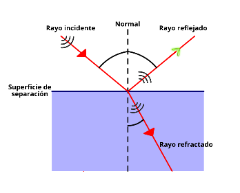

Reflexión y refracción
Fenómenos por los que cuando un rayo luminoso llega a la superficie que separa dos medios distintos, parte de la energía se refleja, propagándose en el mismo medio, pero en sentido opuesto, mientras que otra parte pasa a propagarse por el segundo, donde, al ser distinto, lo hará con diferente velocidad.
